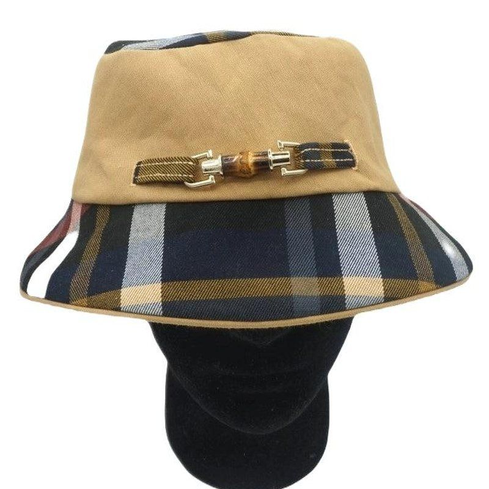
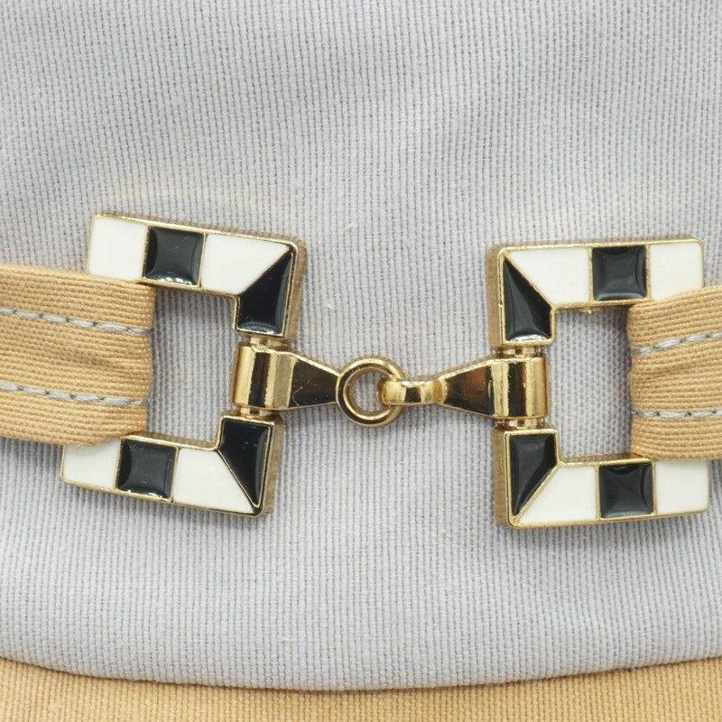
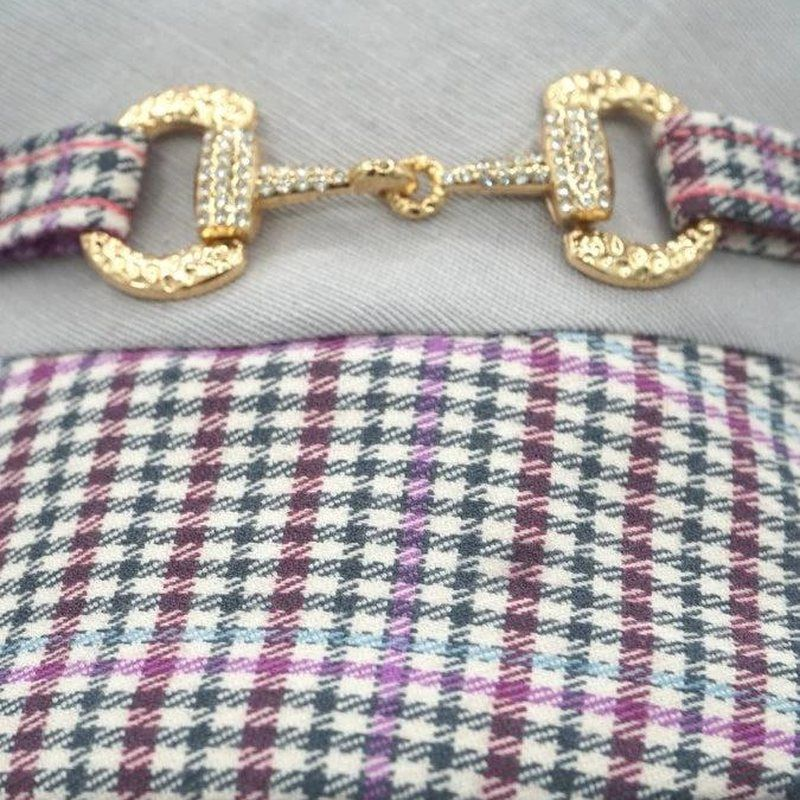
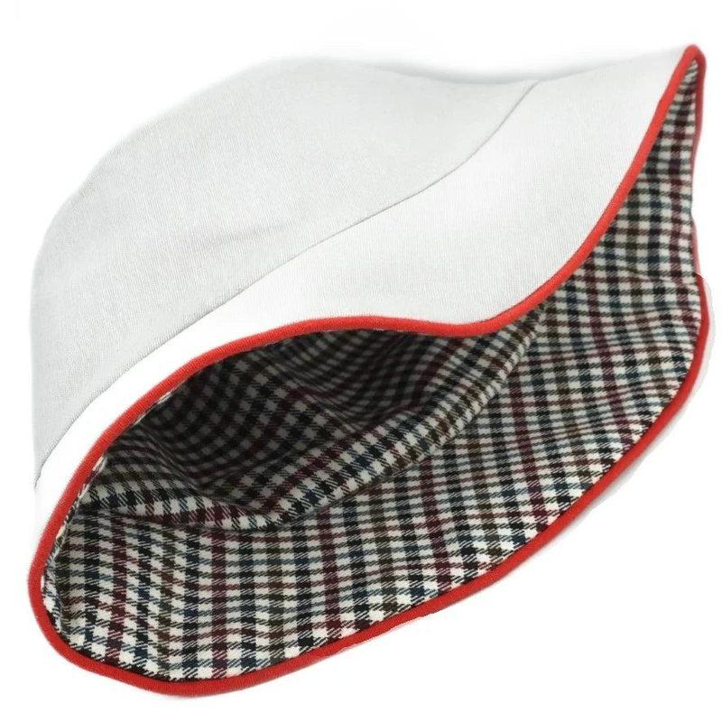
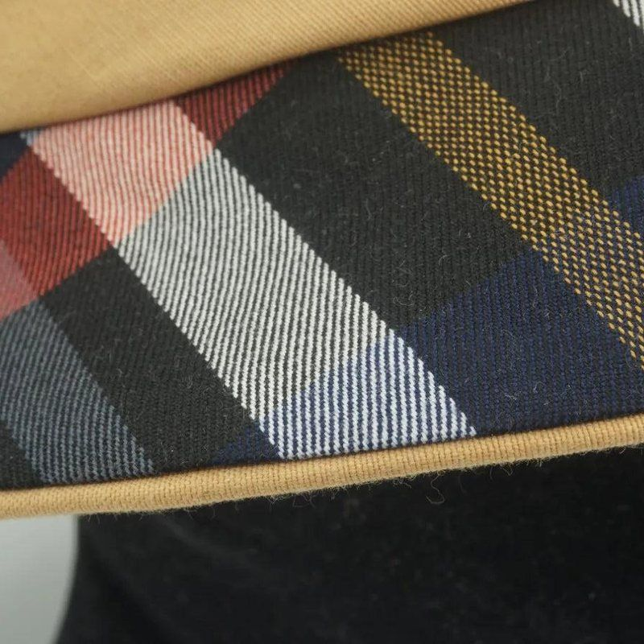
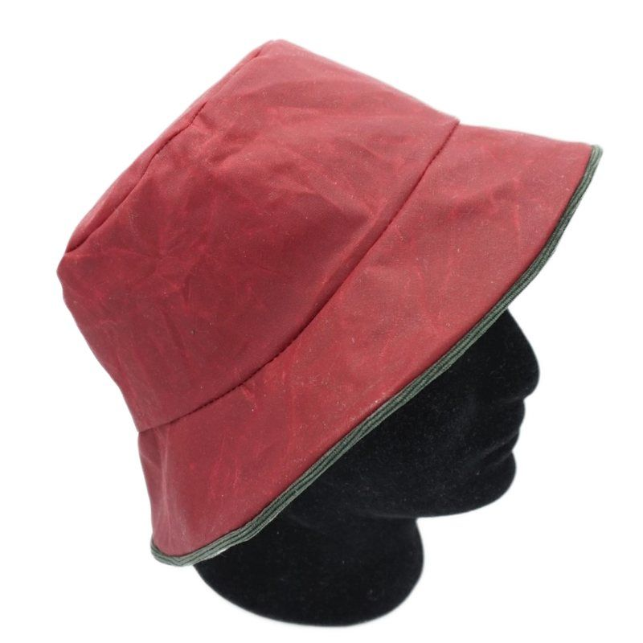
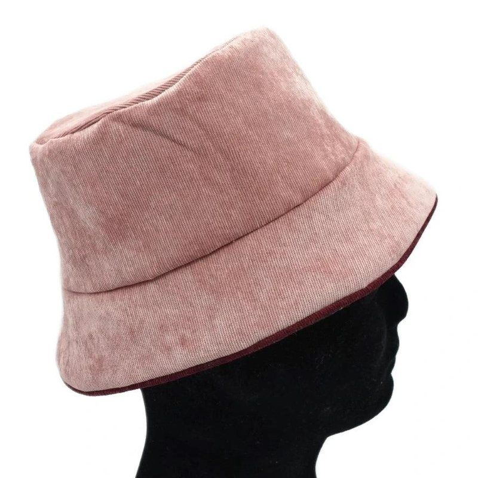

Bucket hat: style ideas
A bucket hat is made for playing with fabrics: a plain against a pattern, two bold colours, piping that ties it together, a buckle on a tab. Here are bucket hats I have sewn, arranged by idea, to make you want to try.
These bucket hats were made as part of a commercial project that did not in the end go ahead. They are shown here as inspiration for your own creations.
Two fabrics, two moods
The crown and the brim do not have to be in the same fabric. A plain light fabric against a patterned one, or two bold colours: the hat takes on a completely different look. With a plaid or a houndstooth, take care to match the pattern at the seams: it makes all the difference.




Buckles and clasps
A shoe buckle or a bag clasp, mounted on a small fabric tab sewn onto the crown, instantly adds elegance. The tab picks up one of the hat's fabrics to tie everything together. Choose a fairly light buckle, so that the crown does not lose its shape.




Reversible hats and piping
A reversible bucket hat is two hats in one: you turn it over to suit your mood or the weather. The contrasting piping on the edge underlines the shape and marks the join between the two sides. Choose it in one of the colours of the two fabrics. For the sewing, see the bucket hat guide.




Materials
Waxed cotton for the rain, corduroy for winter, a plaid or a small check for character: the same bucket hat takes on a different look depending on the fabric. Try a scrap of fabric before cutting, as each material behaves differently.




Videos
These bucket hats appear in two videos. They are in English, with French subtitles available. Their tone is commercial: they date from the abandoned project mentioned above.